May 2024
Creating a Quadruped Robot Inspired by Interstellar’s “TARS”
One of my favourite movies of all time is Christopher Nolan’s Interstellar Film, and beyond the plot, the black hole, the soundtrack, and the time relativity, the robot TARS has always had my attention. I think I like it so much honestly because it moves in a way I’ve never seen before (and it looks cool asf). The simple use cases of a robot with the ability to move like it does in the movie are out of this world. The most obvious use is as an exploration robot, to send it off to places that are too dangerous for humans. And without the lack of manipulability of wheels holding it down, it creates a great advantage.
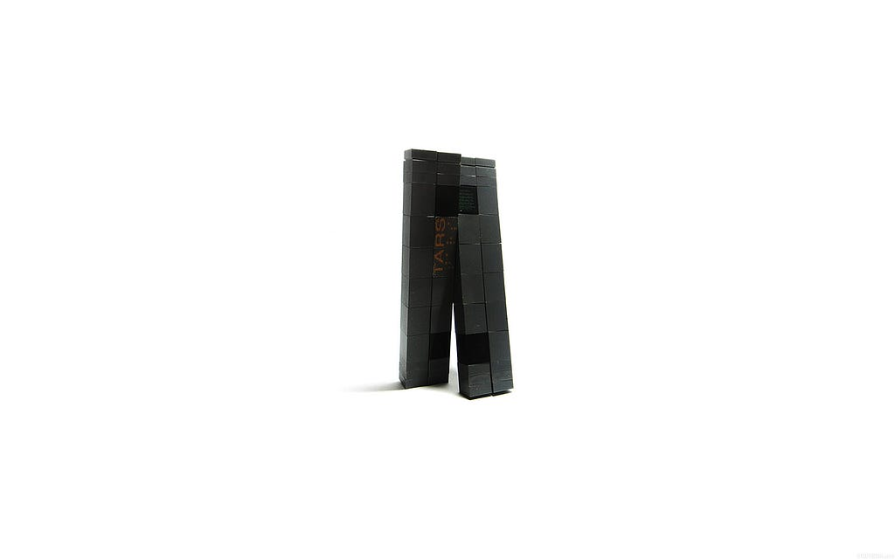
The greatest hurdle with this robot is its balance. In the movie, the robot has mastered the ability to balance through all of its various movements. To start experimenting with this balance aspect I have started designing and assembling a prototype a more dumbed-down version of this robot.
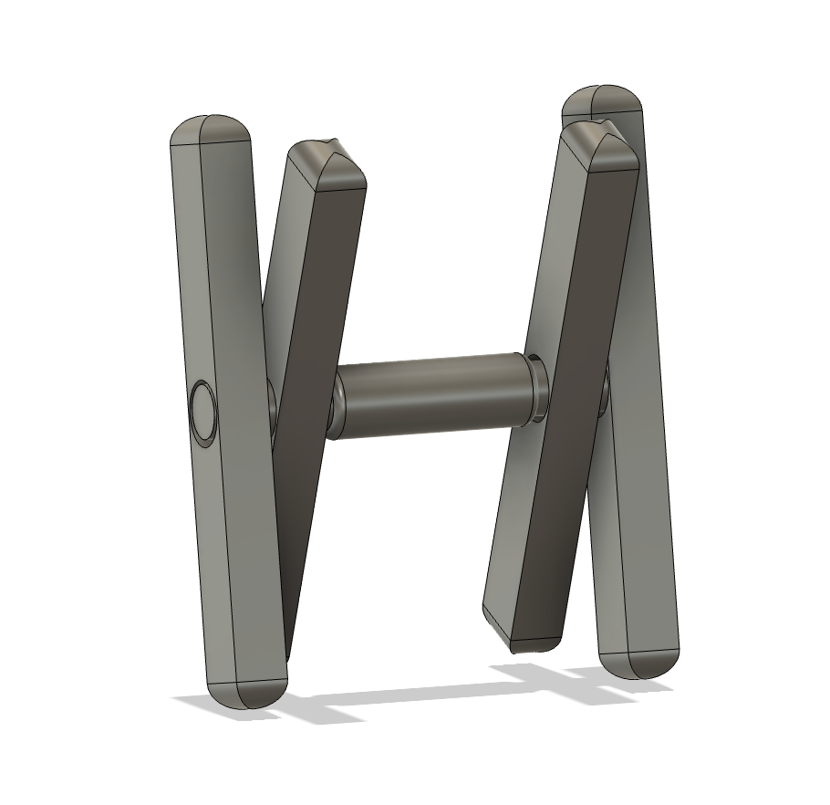
Some key differences from the movie:
- Single Axis: I chose to go with a single-axis design, which differs from the movie because it would allow me to experiment and get the simple movements dialled in first. Having a single axis is also a lot less resource-intensive.
- Center Console: The center console I designed is supposed to house all the main electronics, the camera and the battery. Since I am going with a 12v battery, I can’t integrate it into one of the legs without there being an irregular center of mass distribution which is crucial to this prototype. The center console also gives me a lot of space for the main electronics like the PDP, gyros, and Ardunio’s I plan to use.
Goal 1:
My first goal with this project is to achieve a crutch-like motion with one of the two legs on each side acting like a crutch to lift up the rest of the robot and move it forward.
In-depth of Mechanics:
In order to achieve the desired crutch-like motion there will be two different types of legs. One leg will have to be on a fixed pivot and the second will have to be able to extend/ contract in order so that when the legs rotate past the bottom, it won’t interfere with the ground.
Fixed Leg Module:
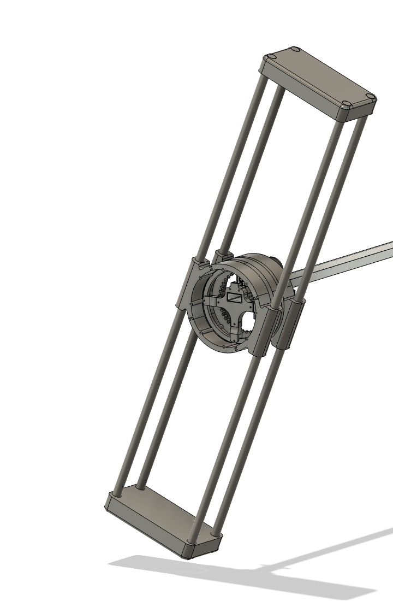
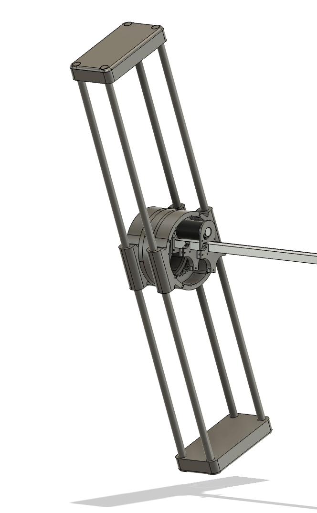
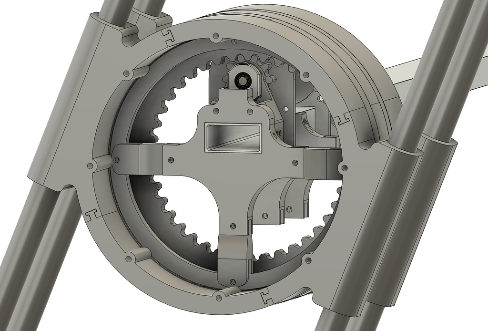
For the prototyping stage, I will use old CIM motors from my FRC team. I’ll have four 1-inch diameter PVC pipes to act as the frame for each leg.
I am using a piece of 2x1 box tubing that will attached to all the fixed components of this robot. On this 2x1 tubing, I will be attaching the CIM motors and attachment points for the center of the bearings (lazy susan from a dining table). The bearing will be used to make sure the legs are secured to the main box tubing whilst ensuring that the rotation is smooth.
The leg will rotate using a sun and planet gear. With the planet gear being attached to the CIM’s output shaft, I can also increase the torque being outputted while also maintaining a simple design. I will be using an AMT 10 Series encoder at the end of the motor shaft to figure out where the rotation of the leg is. I will multiply the rotations on the encoder by the 1:4 ratio on the gears to get the number of times the leg has rotated.
The majority of the components are 3D printed which I printed off the printers from my robotics team.
Extending/ Contacting Leg Module:
I have a few ideas for this but haven't settled on a single idea yet. The idea I have started to design is very similar to the fixed pivot leg. The biggest difference is the lengths of the leg and the ends of the leg.
1. End of the Leg:
The end of the leg will have a rotating eccentric semi-circle that will have two phases.
Phase 1:
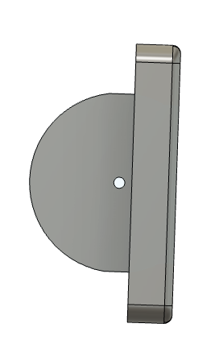
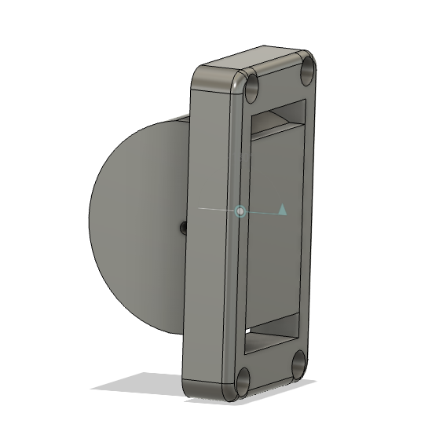
Phase one is retracted. When the semicircle is rotated in this ordination, the length of the leg is at its shortest point. Allowing for the leg to pass underneath the robot during the rotation.
Phase 2:
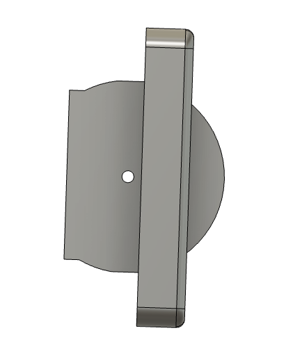
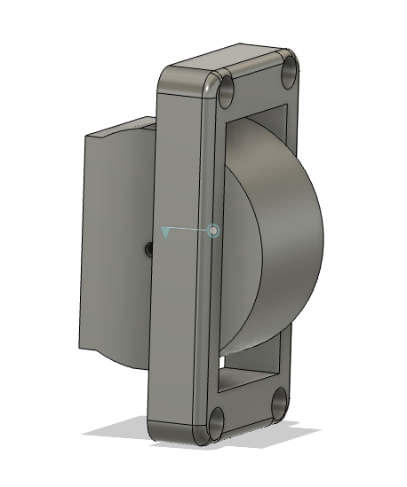
Phase two is extended. When it is in the phase, the length of the leg is at its longest, giving it 1.5 inches of extra height. When it is in this phase it allows for the fixed legs to pass underneath the robot when rotating.
Here is what the final assembly is going to look like:
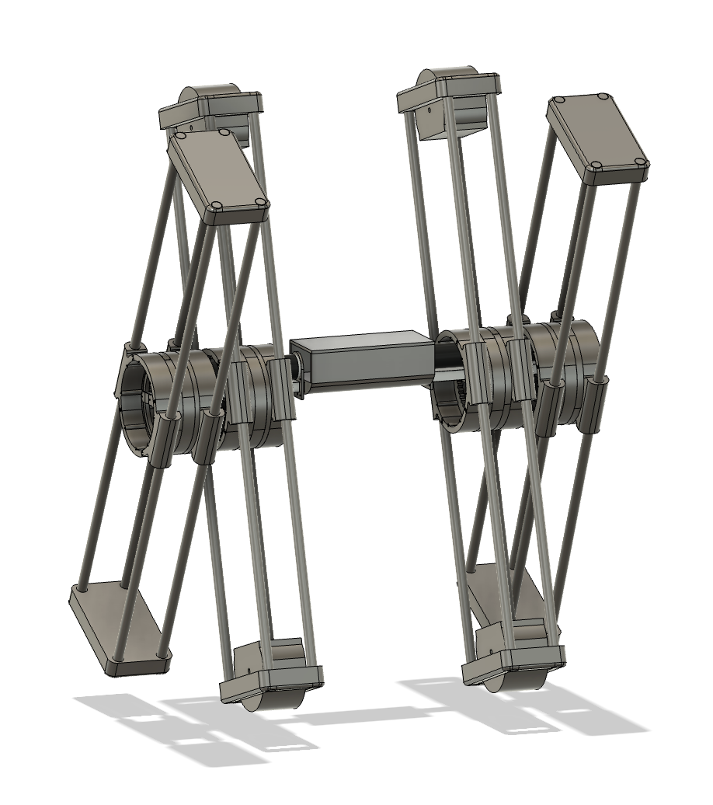
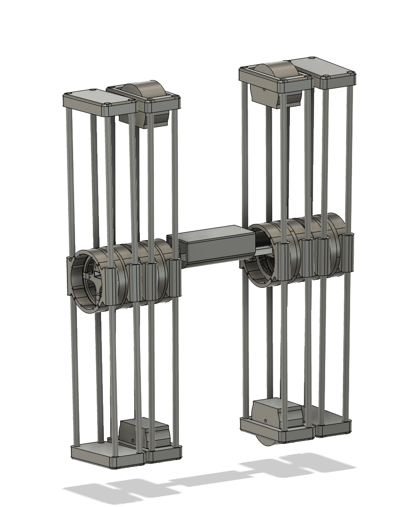